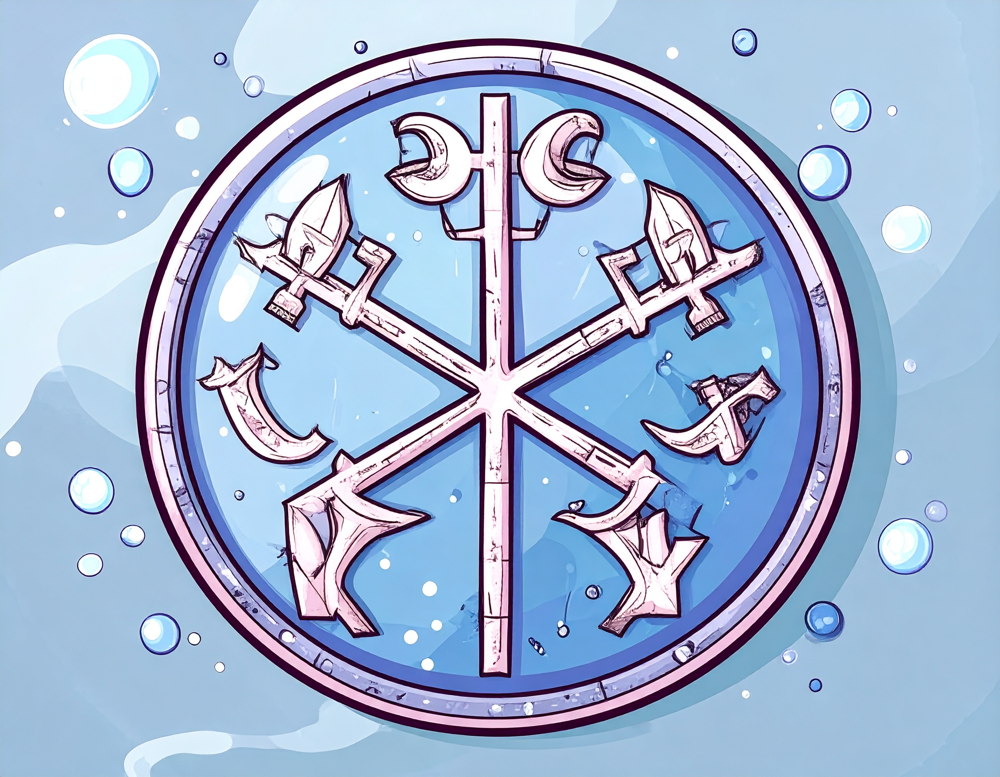
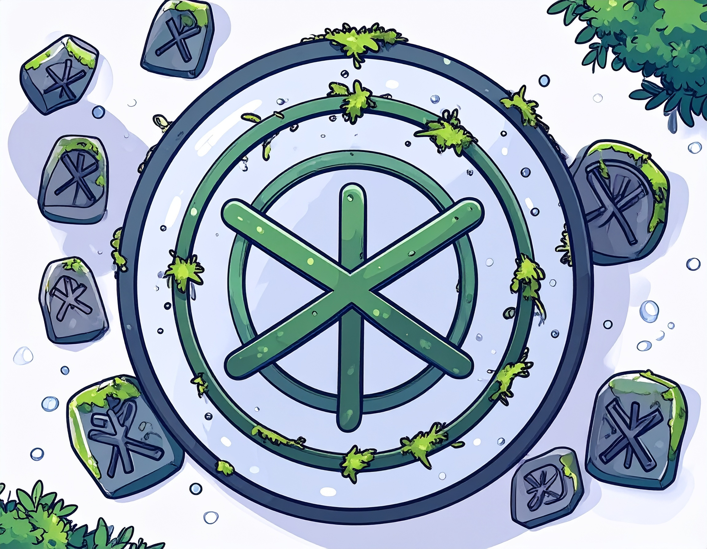
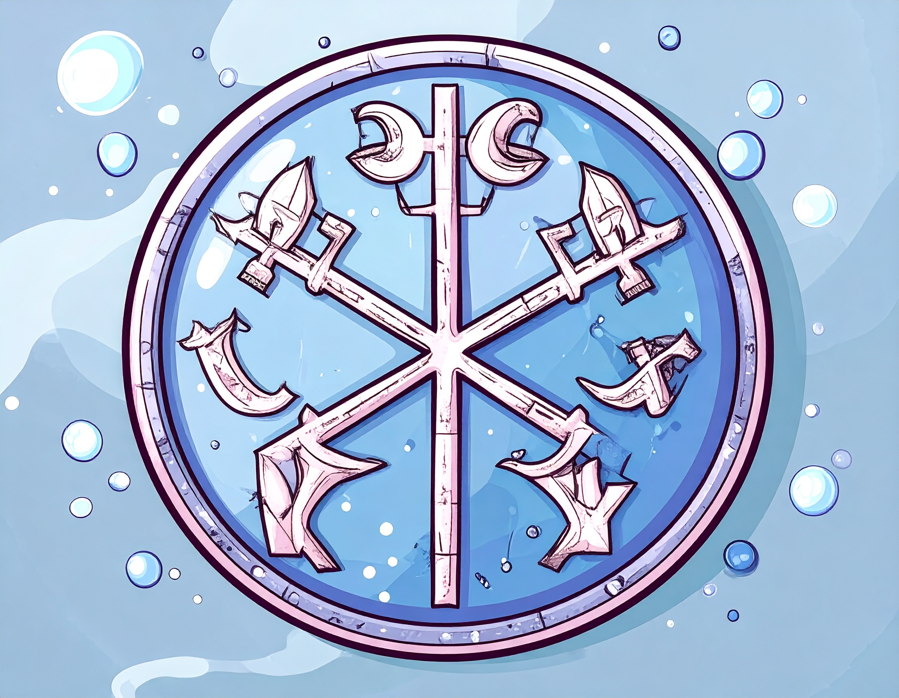
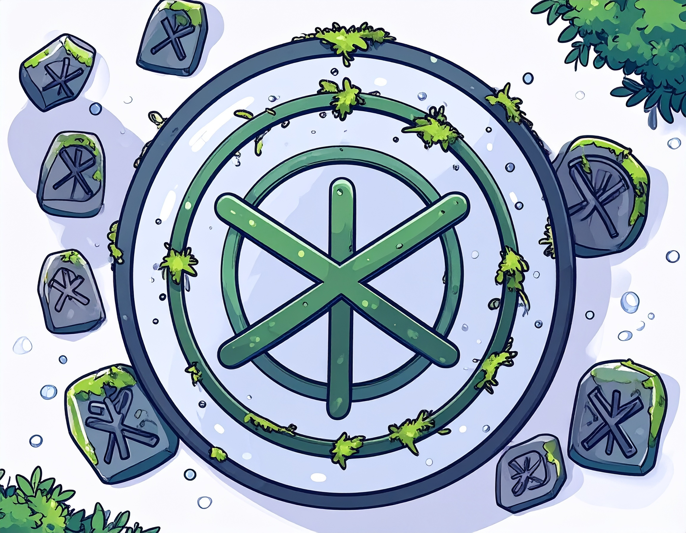

Finn the Flamekeeper
Full-Stack Dragon Developer
Forged in the fire of forgotten frameworks, Finn is a mythical full-stack dragon developer whose claws type in JavaScript and wings deploy React apps with ease. Known across the realms for his fierce debugging and pixel-perfect firebreath.
With a heart as warm as his flames, Finn is on a quest to master the ancient runes of coding. Join him in his adventures through the mystical lands of web development, where every line of code is a step towards unlocking the secrets of the digital universe.
Whether he's soaring through the skies of cloud computing or diving into the depths of database dungeons, Finn's journey is one of discovery, innovation, and a touch of dragon magic. Follow his path to become a legendary coder in your own right!
Runes of Power
 



Directions to play Finn's Runekeeping
To embark on your journey with Finn, simply click 'Enter'. This will summon Finn to guide you through the mystical world of runes and coding adventures.